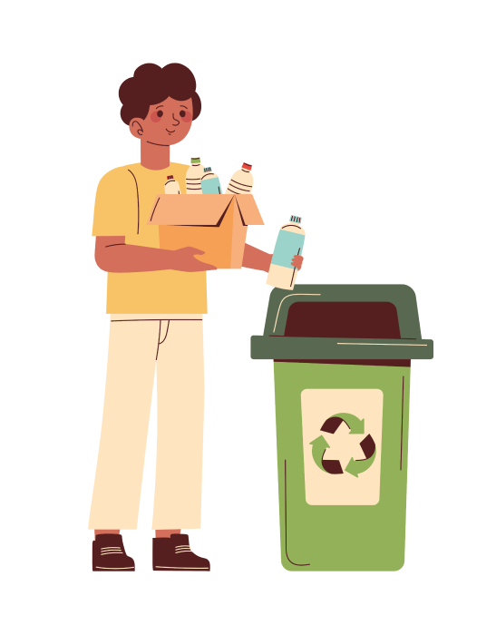
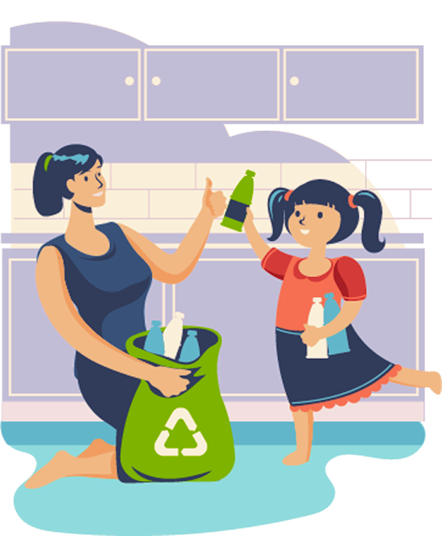
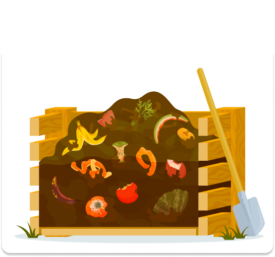
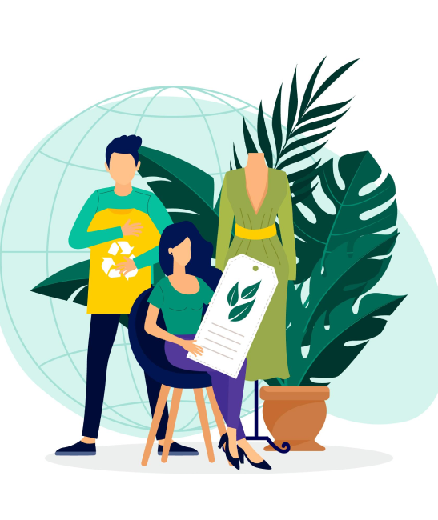
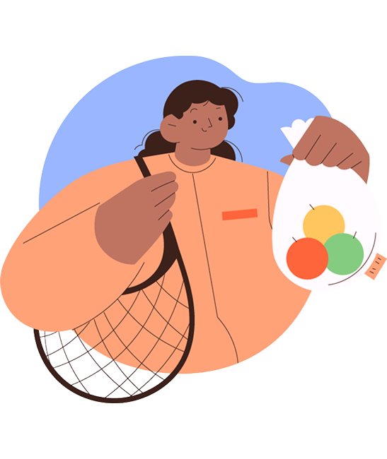

Separe corretamente seus resíduos
Separar o lixo reciclável do orgânico é o primeiro passo para uma gestão de resíduos eficiente.
Saiba mais

Lave e seque os recicláveis
Antes de descartar embalagens recicláveis, lave-as para remover resíduos e seque-as para evitar odores e contaminações.
Saiba mais

Pratique a compostagem doméstica
Transforme resíduos orgânicos, como cascas de frutas e restos de alimentos, em adubo natural para plantas.
Saiba mais

Adote os 5 R's da sustentabilidade
Repense, Reduza, Reutilize, Recicle e Recuse. Essas práticas ajudam a minimizar a geração de resíduos e promovem um consumo consciente.
Saiba mais

Evite o uso de descartáveis
Opte por produtos reutilizáveis, como sacolas de pano, garrafas e utensílios duráveis, reduzindo o volume de lixo gerado.
Saiba mais
